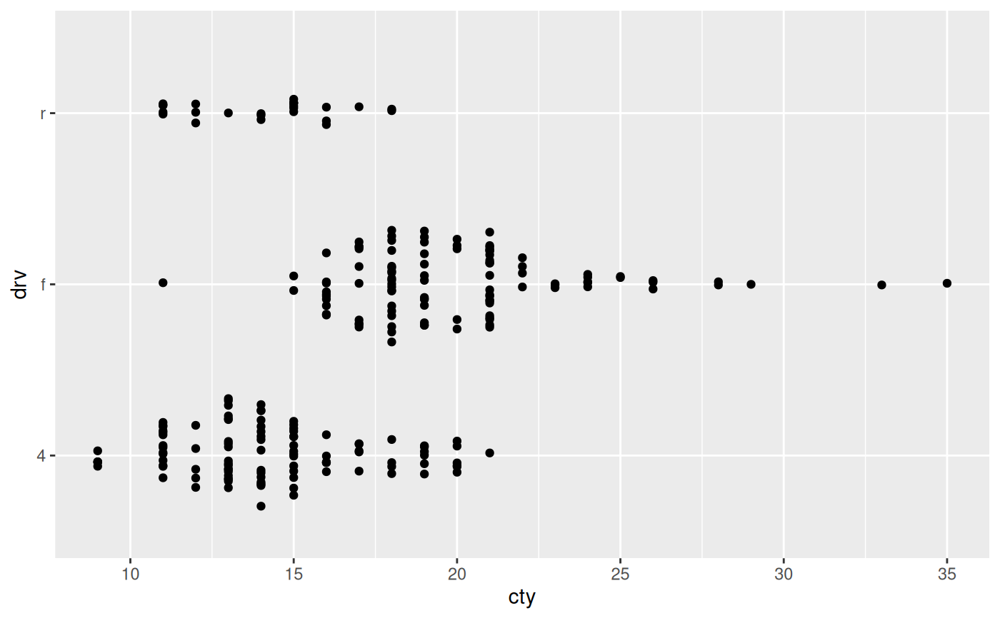
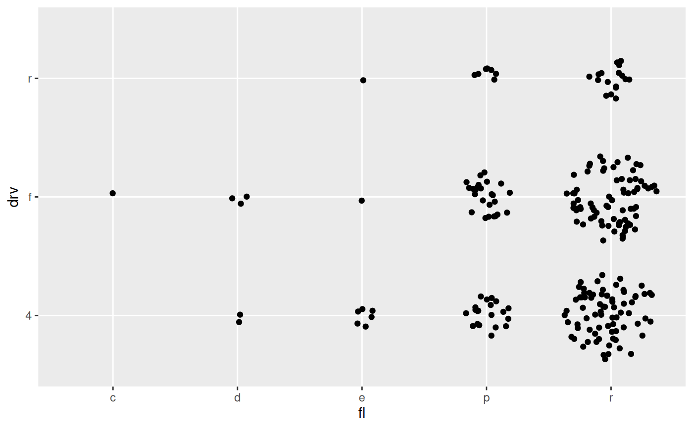
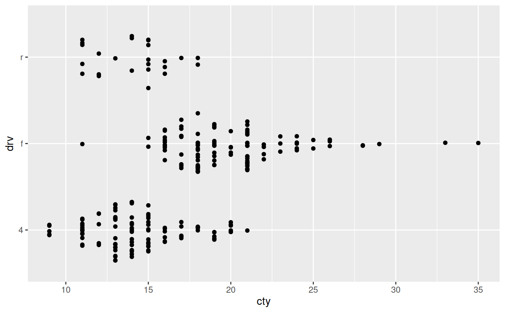
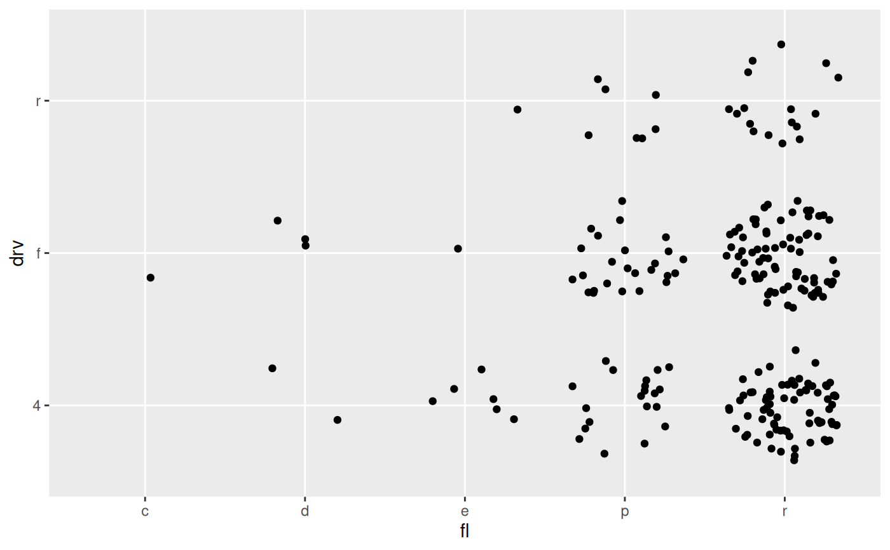

Jitter based on scale types
position_auto.RdThis position adjustment is able to select a meaningful jitter of the data based on the combination of positional scale types. IT behaves differently depending on if none, one, or both the x and y scales are discrete. If both are discrete it will jitter the datapoints evenly inside a disc, if one of them is discrete it will jitter the discrete dimension to follow the density along the other dimension (like a sina plot). If neither are discrete it will not do any jittering.
position_auto(jitter.width = 0.75, bw = "nrd0", scale = TRUE, seed = NA)
Arguments
| jitter.width | The maximal width of the jitter |
|---|---|
| bw | The smoothing bandwidth to use in the case of sina jittering. See
the |
| scale | Should the width of jittering be scaled based on the number of points in the group |
| seed | A seed to supply to make the jittering reproducible across layers |
See also
geom_autopoint for a point geom that uses auto-position by default
Examples
# Continuous vs continuous: No jitter ggplot(mpg) + geom_point(aes(cty, hwy), position = 'auto')# Continuous vs discrete: sina jitter ggplot(mpg) + geom_point(aes(cty, drv), position = 'auto')# Discrete vs discrete: disc-jitter ggplot(mpg) + geom_point(aes(fl, drv), position = 'auto')# Don't scale the jitter based on group size ggplot(mpg) + geom_point(aes(cty, drv), position = position_auto(scale = FALSE))ggplot(mpg) + geom_point(aes(fl, drv), position = position_auto(scale = FALSE))